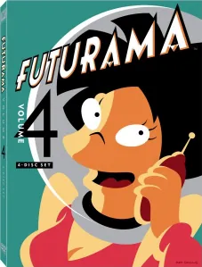

The genetics
Genetics is played for comedy. The de-aging tar works by sticking time-altering 'chronitons' to the crew's DNA (and to the robot Bender's 'RNA', robonucleic acid), and Professor Farnsworth's attempt to fix this with a genetically modified bacterium that clears their DNA backfires, making them regress towards foetuses and non-existence. The Professor is the series' archetypal senile mad scientist, well-meaning but reckless, and the cure comes from a mythical fountain rather than from his science. A passing joke involves Zoidberg's clone siblings. The episode, a pastiche of rejuvenation myths, uses genetic vocabulary as technobabble, with no attempt at plausibility.
How genetics is portrayed
- Overall portrayal of genetics
- negative In a comic register, the Professor's genetic fix is a reckless blunder that worsens the problem, and the solution comes from myth, not science.
- Outcome of the genetic intervention
- negative The modified bacterium backfires and nearly regresses the crew out of existence; only the mythical Fountain of Aging restores them.
- Professor Hubert J. Farnsworth
- ambivalent Aim: benevolent (positive). The Professor engineers a bacterium to strip chronitons from his crew's DNA and restore their ages, but it makes them regress dangerously; he is a comic senile scientist, both lovable and a menace.
The story
Fed up with Professor Farnsworth's senility, the Planet Express crew takes him to a rejuvenating spa in Florida, where he is bathed in anti-aging tar; when Bender works the pump too hard, the whole crew falls in. The Professor becomes a man in his fifties, the others turn into teenagers and Dr. Zoidberg reverts to his larval stage. Leela, who never had a normal adolescence, moves in with her parents in the sewers and dates the teenage Fry. Finding that time-altering chronitons have stuck to the crew's DNA, the Professor concocts a genetically modified bacterium to clear them, but Leela refuses the treatment. It backfires: everyone else keeps getting younger, heading for 'pre-life'. Leela finds the mythical Fountain of Aging in a storybook and takes the shrinking crew there; she dives into its current to save them, giving up her teenage life, and Farnsworth's escaped gargoyle Pazuzu rescues the Professor. Everyone returns to normal.